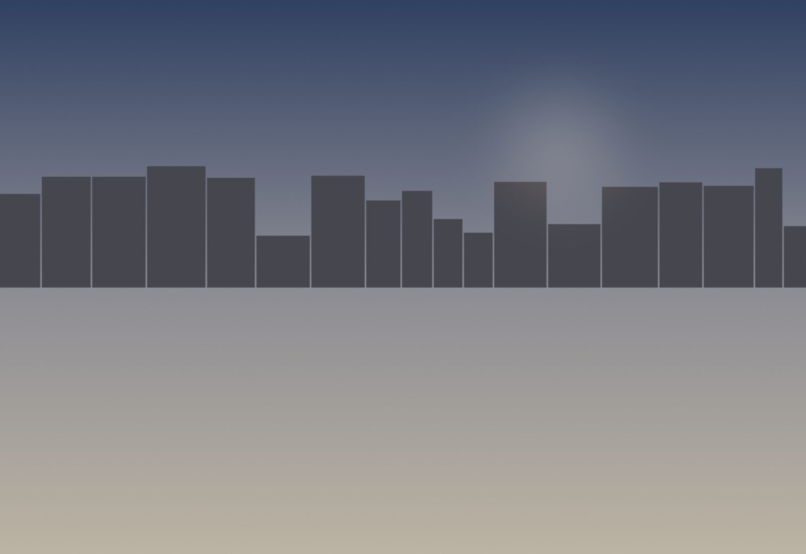
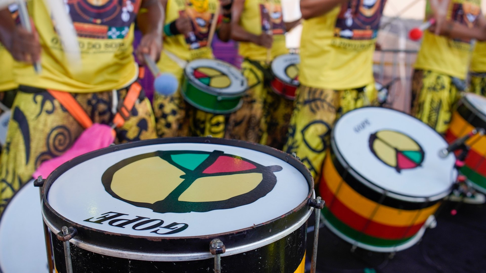
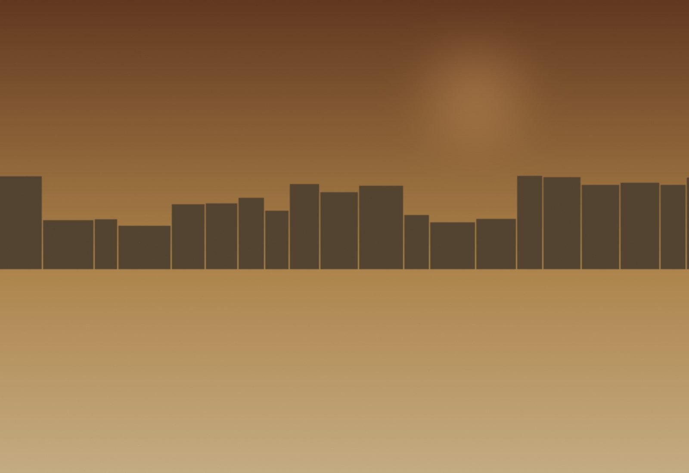
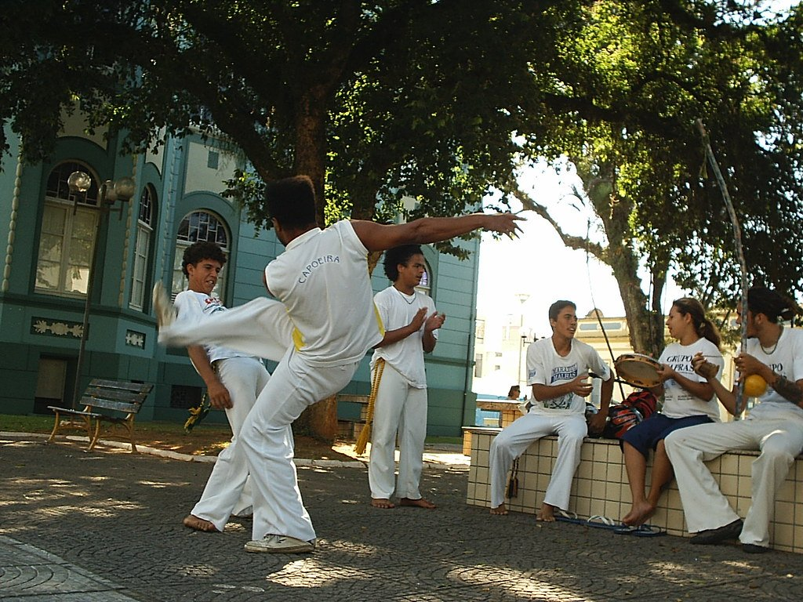
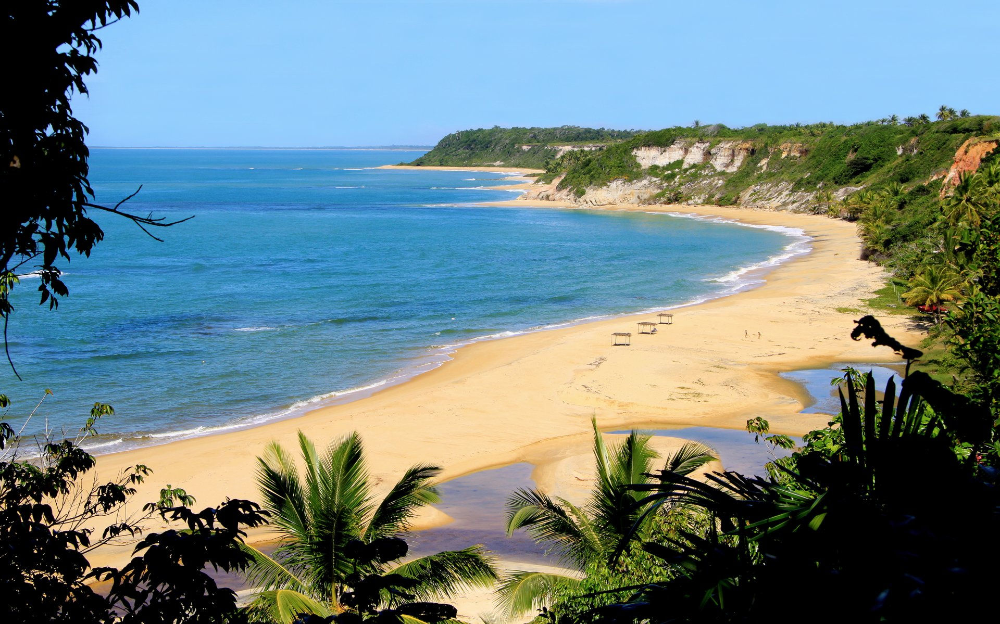
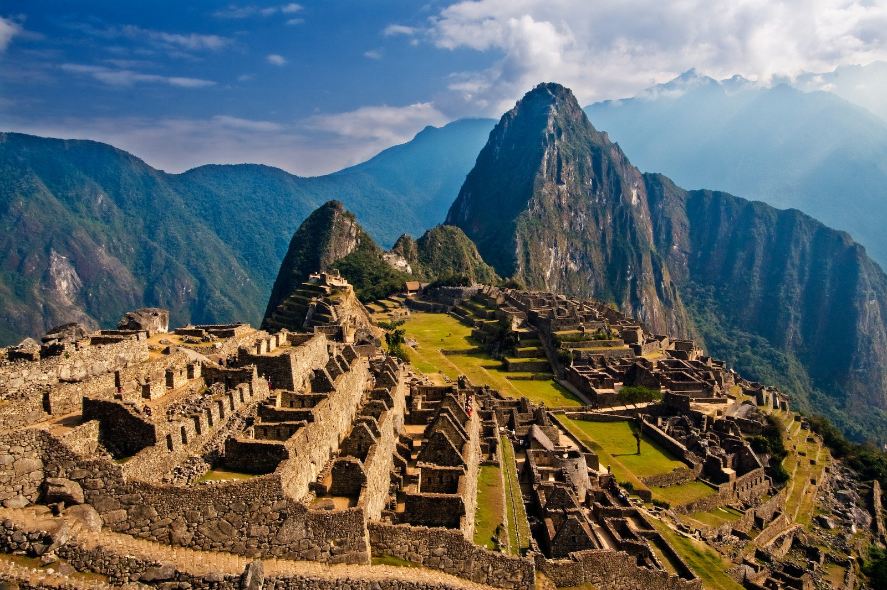
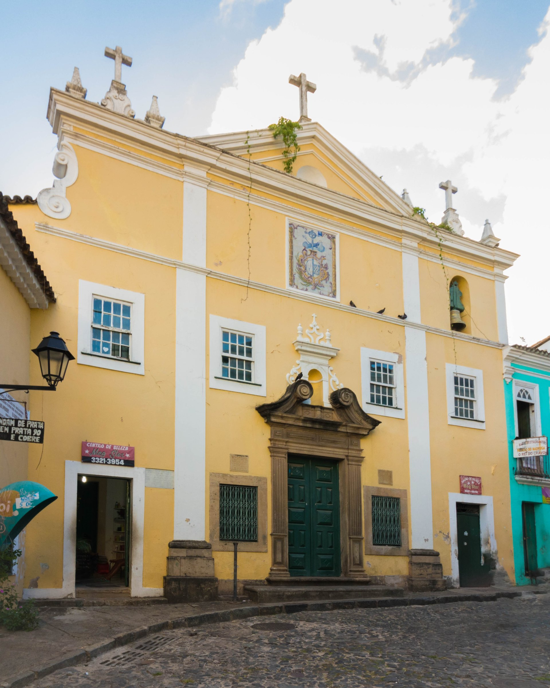
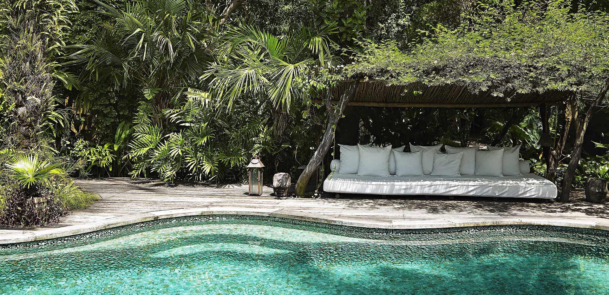
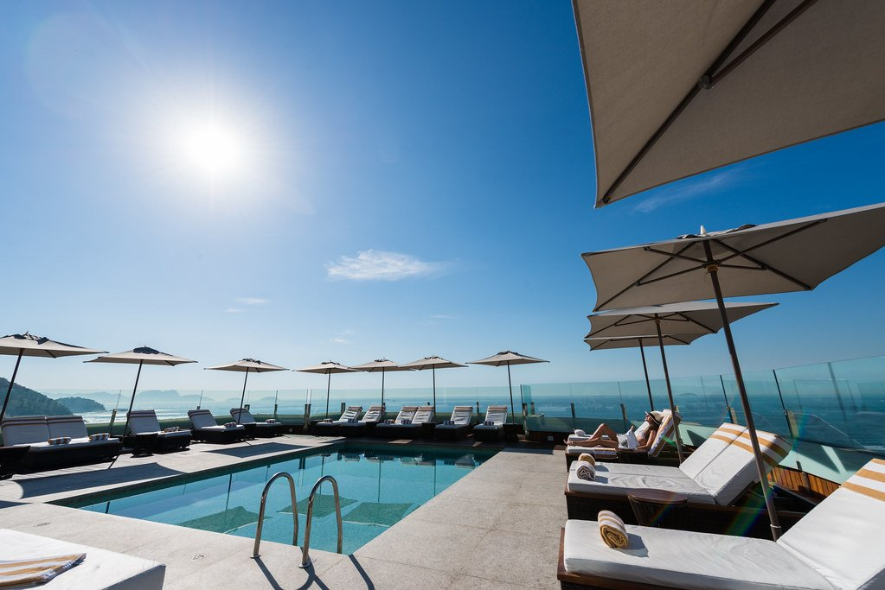
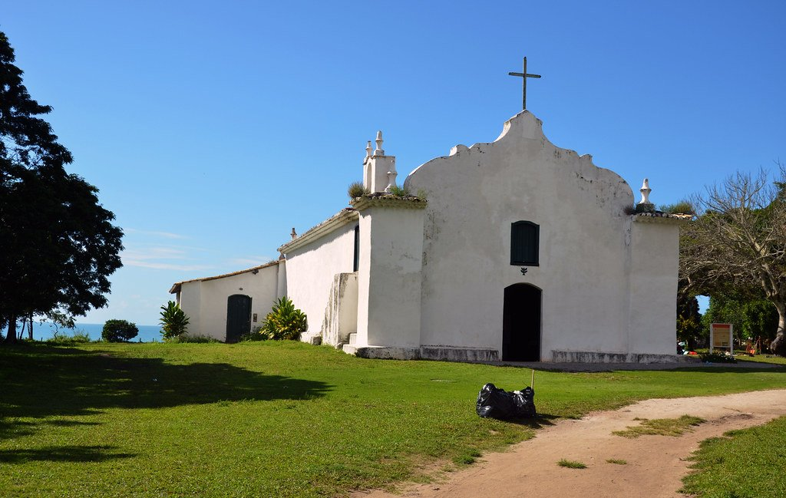

Día 1 (mié) · Llegada
Llegada a Salvador
Vuelo BA-Salvador (~7h con escala). Aperitivo caipirinhas + acarajé. Presentación del antropólogo UFBA. Cena en Maria Mata Mouro.


El Otro Carnaval · Salvador, Trancoso y la herencia afrobrasileña · Febrero 2027
Ver fechas y preciosEl Carnaval de Río es global, comercial y mediático. El Carnaval de Salvador es otra cosa: es el más grande del planeta (2 millones de personas en la calle), pero es también el más profundo cultural y políticamente. Ilê Aiyê —el primer bloco afro— se fundó en 1974 como respuesta al Carnaval blanqueado. Filhos de Gandhy sale el domingo con 15.000 hombres vestidos de blanco, hilo azul al cuello. Es la procesión más bella del Carnaval mundial.
Y detrás del Carnaval: Salvador, el puerto donde entraron 4,5 millones de africanos esclavizados entre 1550 y 1850 — más que toda la América del Norte combinada. Donde el candomblé sigue vivo, donde nació la capoeira, donde el samba de roda del Recôncavo es UNESCO Inmaterial. Nueve días con antropólogo de UFBA en piso, visita educativa a Casa Branca (terreiro fundado en 1830), camarote privado para los dos días clave del Carnaval, y descompresión final en Trancoso.

Box privado para los dos días clave del Carnaval (sábado Ilê Aiyê + domingo Filhos de Gandhy) con catering y antropólogo traduciendo lo que vemos.
Visita educativa a Casa Branca (1830, Patrimônio Cultural Brasileiro) con la iyalorixá y profesor de UFBA — no espectáculo, ritual real.
Día completo en el sur de Bahía: Caraíva, comunidad Pataxó Aldeia Reserva da Jaqueira, y baño en las piscinas naturales del Espelho.
Vuelo BA-Salvador (~7h con escala). Aperitivo caipirinhas + acarajé. Presentación del antropólogo UFBA. Cena en Maria Mata Mouro.

Caminata UNESCO con antropólogo: Igreja São Francisco (la más dorada del catolicismo americano), Pelourinho Square, Igreja Nossa Senhora do Rosário dos Pretos (construida por esclavos para esclavos). Fundação Pierre Verger. Casa do Carnaval.

Sesión privada con Mestre de Capoeira Angola. Visita educativa a terreiro Casa Branca con iyalorixá. Salida nocturna a Pelourinho — Sextou, capoeira pública.

Camarote privado Barra-Ondina. Salida histórica de Ilê Aiyê desde Liberdade — 5.000 percussionistas y bailarines con telas africanas.
Camarote otra vez. Procesión Filhos de Gandhy — 15.000 hombres en blanco con turbante azul. Cena en casa de samba fuera del circuito.
Salida temprana a Cachoeira — convento São Francisco, museo Hansen Bahia. Almuerzo con familia samba de roda. Vuelo Salvador-Porto Seguro. Traslado a Trancoso.

Mañana en el Quadrado con iglesia São João Batista (1652). Día completo en Praia dos Nativos con cabaña privada.
Barco privado a Caraíva. Visita a Aldeia Pataxó Reserva da Jaqueira. Tarde en Praia do Espelho, piscinas naturales. Cena de despedida en el Quadrado.
Mañana libre. Traslado Porto Seguro aeropuerto. Vuelos.
Sumá días al final del viaje, con salidas privadas.

El parque nacional de cuevas, cascadas y mesas — la Patagonia bahiana. Pre-Carnaval o post-Trancoso.
Para ver Río fuera de Carnaval — Copacabana en otoño, Christ Redeemer, Santa Teresa y Pão de Açúcar.
Combo brasileño completo: cultura afro + el delta más grande del mundo y el felino top de América.

Pelourinho Salvador (palacete colonial XVII)

Trancoso (11 casitas restauradas en Quadrado)

Recôncavo (almuerzo destino, no overnight)

Trancoso (alternativa a UXUA si bookean grupos grandes)
| Salida | Disponibilidad | Precio desde | |
|---|---|---|---|
| 3 feb 2027 | Pocas plazas | $10,200 | Reservar → |
| 10 feb 2027 | Abierta | $9,500 | Reservar → |
| 17 feb 2027 | Abierta | $9,500 | Reservar → |
Precios por persona en habitación doble. Suplemento de habitación individual a consultar.